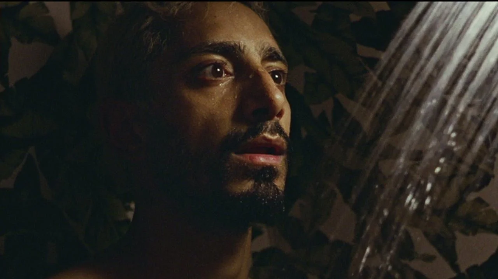

La fragilidad de los sentidos
La excelentisima Sound of Metal nos enseña a apreciar el presente
Por Alan Nicolas Prado
08/07/2021
Muchas veces el cine nos presento peliculas maravillosas acerca del mundo de la musica. Ya sean documentales ficticios como "Spinal Tap" o biopics de gran presupuesto como "Bohemian Rapsody" o "Rocketman" todas ellas tratan de los conflictos en la vida de los artistas, excesos, adicciones y alguna que otra muerte. Pero el nuevo drama de Amazon Prime dirigido por Darius Marder se sale de la norma para presentarnos una historia particular pocas veces contada sobre la transformacion interna que una persona puede llegar a vivir despues de haber vivido una situacion tragica y sobre la redencion que todos llevamos dentro.
Cuando el ruido se apaga
La pelicula nos presenta a Ruben y Lou, una pareja de musicos de heavy metal que viven de forma nomada recorriendo el camino de tour en tour en una casa rodante. Si bien pertencen a la escena indie del metal desde el comienzo notamos que tienen un exito moderadamente bueno, pudiendo vivir de su amor a la musica libremente. Todo cambia cuando Ruben comienza a perder la audicion durante un concierto y su mundo empieza a desmoronarse lento pero seguro. Para este punto se nos revela que ambos tuvieron problemas con adicciones en el pasado y la rutina fue lo unico que los mantuvo sobrios, cuidandose el uno al otro. Ruben tendra que comenzar un viaje individual adptandose a su nueva condicion, un viaje que podria abrirle muchas puertas y cerrarle otras para cambiar su mundo para siempre
El director hace un excelente trabajo moviendonos junto con Ruben por la nueva vida que conlleva la sordera, vamos metiendonos de a poco en ese nuevo mundo, conociendo personajes que lo ayudan a adaptarse y sobrellevar con menos dificultad la adversidad. El tema recurrente de la adiccion es clave para entender al personaje principal. Ruben es un ex-drogadicto recuperado que translado su adiccion a la musica y al verse privado de esta comienza a mostrar signos de su vida pasada, teniendo momentos de furia y violencia.
Muchas veces llenamos nuestras vidas con distracciones del mismo modo que Ruben llenaba la suya con ruido que lo mantenia alejado de sus adicciones pero que era una adiccion en si. Al verse privado del ruido se da cuenta poco a poco de las cosas que estuvo ignorando viviendo su vida con Lou en soledad. El estar presente, las conexiones humanas, la belleza del silencio, todos estos recursos comienzan a abrirsele a medida que va aceptando poco a poco su condicion y ahi se encuentra la clave de todo.
La unica manera de vivir es aceptando las cosas por como son y no por como quisieramos que fueran.
Actuaciones perfectas
Riz Ahmed es un actor que esta empezando a hacerse conocido y bien merecido se lo tiene. Su interpretacion roza la perfeccion, podemos sentir todas las emociones de su personaje durante toda la pelicula, la rabia, la soledad, la tragedia por la que pasa. Nos facilita simpatizarnos con el y lo hace de una manera sutil y bien lograda llegando a sentir lo mismo que el durante las escenas mas dramaticas.
Olivia Cooke es otra actriz que tampoco deberia pasar desapercibida. Ya nos mostro de lo que es capaz en "Thoroughbreds" y aqui encarna excelentemente a la vulnerable Lou, un personaje que se muestra fuerte pero que es muy debil por dentro. Una de las sorpresas es el actor Paul Raci, nominado al oscar por esta pelicula en condicion de mejor actor de reparto. Y es que habria que estar ciego para negar el enorme talento que puso en su interpretacion como mentor del protagonista, una especie de padre postizo para todas las personas que estan bajo su cuidado. Con 73 años, Raci, solo obtuvo papeles menores durante los 40 años en los que estuvo activo y su nominacion es un triunfo para un actor tan infravalorado como el.
Sound of Metal esta disponible para ver con subscripcion en Amazon Prime
Mas contenido que te
puede llegar a interesar:

The Boys, la irreverente deconstruccion del genero de superheroes

Analizamos el declive de la tercer temporada de American Gods

Marihuana, cocaina y guerra: Narcos volvio y se translado a Guadalajara

Selena, la serie de la cantante de Tex-Mex completo su historia tras dos temporadas
SERIES
Zack Snyder + Zombies en Las Vegas

La re-invencion de un clasico de Disney
Reseñamos Ichi the Killer, la joya asiatica mas violenta que deberias ver
Comparamos Rebuild of Evangelion con su serie original
CINE

After Skool, el canal de YouTube que nos enseña a mirar las cosas de una forma distinta

La dopamina, el neurotransmisor que activa nuestra motivacion

Ikigai, la filosofia japonesa para tomar el rumbo de nuestras vidas

Recordamos un icono del estilo, Glenn O'Brien